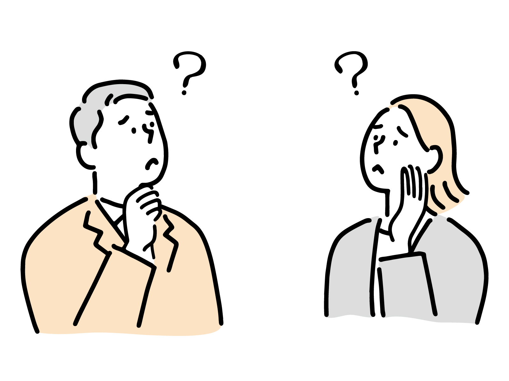
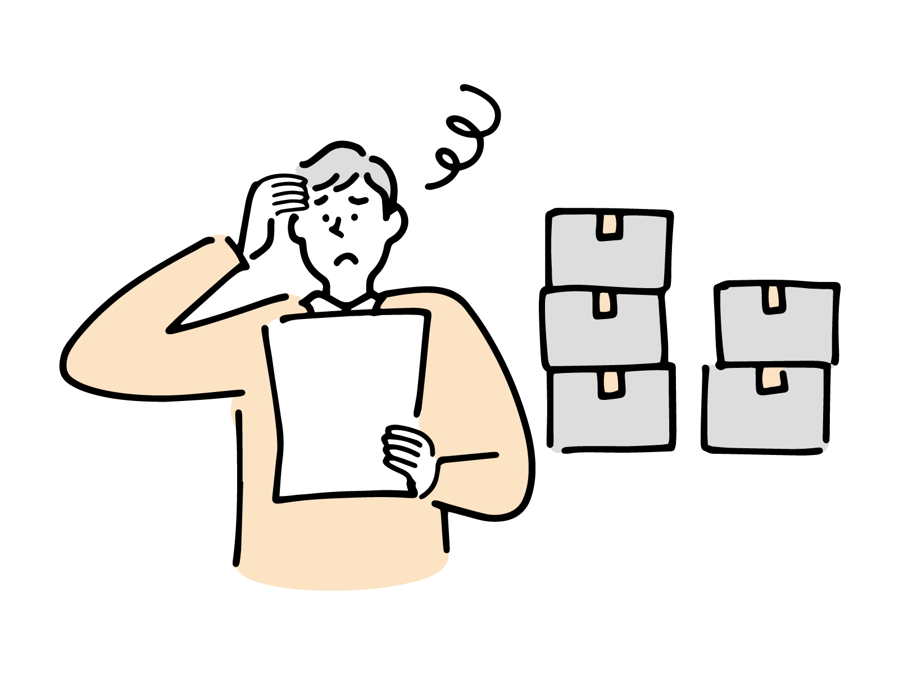
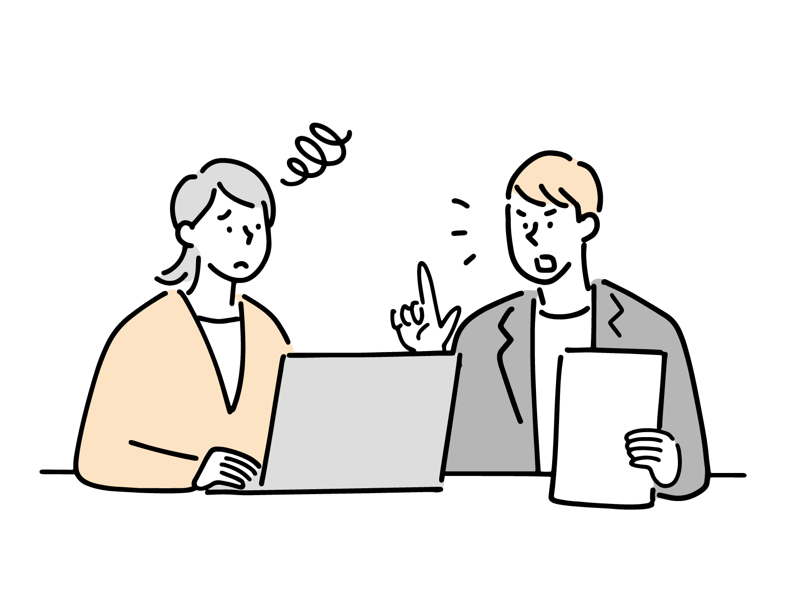
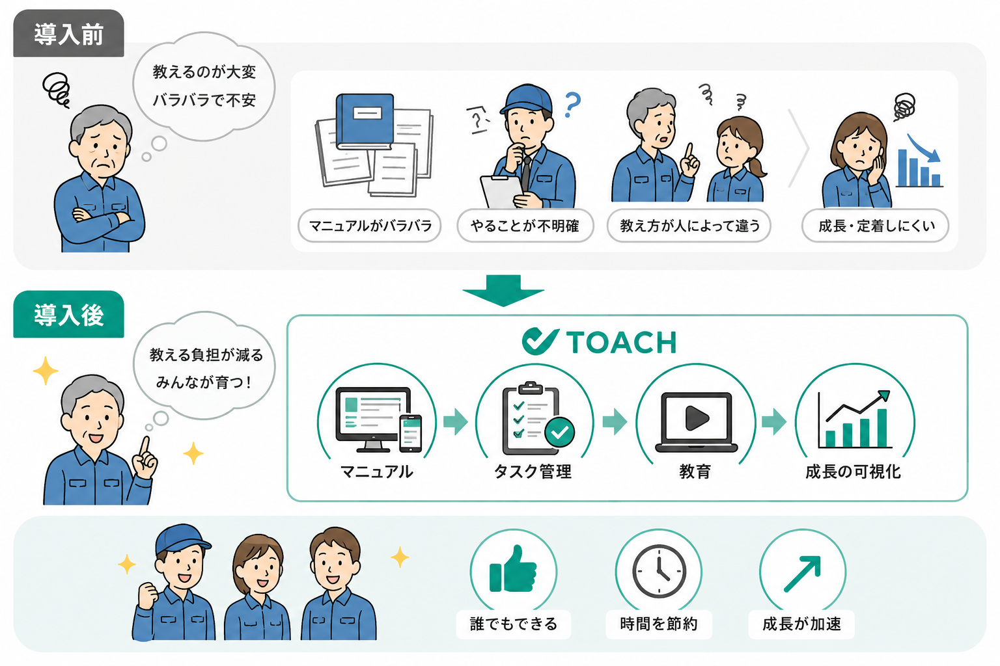

01
01
新人教育に時間がかかる
3分でわかる
従業員数と現場の教育状況をもとに、新人教育・同じ質問への対応・引継ぎ・マニュアル未整備によって発生している可能性がある年間損失額を算出します。
Check Point
01
新人教育に時間がかかる

02同じ質問を何度も受ける
ベテラン社員に業務が集中している

04マニュアルが古い、または存在しない

05引継ぎに毎回時間がかかる
Solution
添付資料の内容をもとに、属人化による損失を減らすための導入イメージを整理しました。 現場の教える負担を減らし、誰でも同じ品質で学べる仕組みを作ります。

マニュアル作成/共有、タスク配信/進捗管理、教育/定着確認を一気通貫で管理。 現場の負担を減らし、人が育つ組織づくりを支援します。
ガイドに沿って入力するだけで、作業手順や教育資料を作成。写真や動画も使えて、視覚的に分かりやすい成果物を作れます。
日本語のコンテンツを選ぶだけで、英語・中国語など主要12言語へ自動翻訳。外国人スタッフ教育もスムーズにできます。
誰が、いつまでに、何をするかを明確化。チェックリストや完了時の写真提出で、抜け漏れを未然に防ぎます。
Eラーニングや確認テストで理解度を可視化。定着が弱い箇所を把握し、教育のばらつきを減らせます。
Contact
実際の業務内容をヒアリングし、マニュアル化・タスク管理・教育定着まで、どの部分から仕組み化できるかをご提案します。